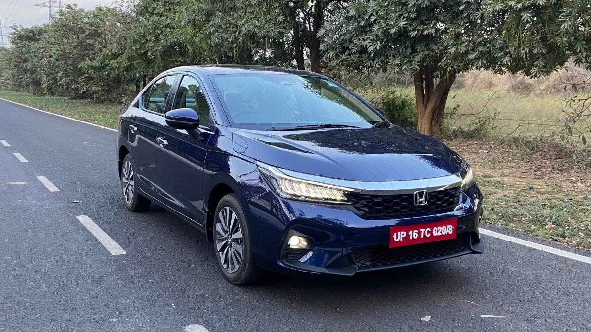

Looking for a value-for-money premium sedan in India? The Honda City V MT stands out with a strong mix of comfort, smooth performance, reliability, and practical features—making it a solid choice for daily use and long-term ownership.
This car is built for people who want more comfort and space, smooth and refined driving, and a premium feel without high cost. It focuses on real driving experience, not just features.
It comes with a 1.5L petrol engine paired with manual transmission. While driving, you feel smooth acceleration, easy gear shifts, and stable performance on highways. It delivers a balanced and effortless drive.
It offers a good balance between fuel efficiency and power, making it suitable for both city and long-distance driving.
One of the most comfortable sedans in this segment, ideal for family use and long drives.
Backed by Honda’s reliable engine, it has low chances of major issues and moderate service cost, making it suitable for long-term use.
The Honda City V MT is one of the best balanced sedans in India. It offers comfort, performance, and reliability—making it a smart long-term choice for practical buyers.